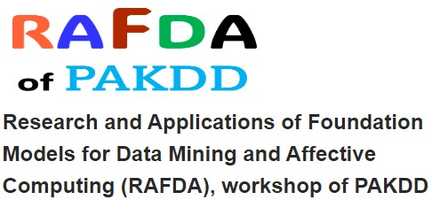

RAFDA Starts In:
About RAFDA
This workshop, entitled
Research and Applications of Foundation Models for Data Mining and Affective Computing (RAFDA), serves
as an inclusive platform exploring the intricate intersections of foundation models, including LLMs,
data mining, and affective computing. RAFDA represents a converging space uniting researchers focused on
the applications, advancements, and implications of foundational models within the realms of data mining
and affective computing.
At its core, RAFDA
encapsulates interdisciplinary dialogue, spotlighting the innovative utilisation of cutting-edge
foundational models for robust data mining practices. Simultaneously, it delves into the nuanced
understanding and interpretation of affective computing, nurturing an inclusive forum for collaboration
and knowledge exchange among researchers, practitioners, and industry experts. RAFDA also aims to be an
international workshop to facilitate dynamic discussions among researchers in foundation models, NLP and
data mining, fostering a collaborative environment for sharing groundbreaking research, novel
methodologies, and innovative applications. RAFDA seeks to explore the diverse applications of
foundation models, including LLMs, across academic and industrial domains, paving the way for
envisioning future advancements and directions within the realm of data mining and AI research.
Important Dates
Submission Deadline
February 22
2025
Acceptance Notification
March 15
2025
Camera Ready Paper
March 29
2025
Scope & Topics
- Techniques for utilizing foundation models (like LLMs) for data preprocessing and feature extraction in mining large datasets.
- Foundation models for anomaly detection, clustering, and classification in data mining.
- Mining unstructured data using foundation models for improved pattern recognition and data analysis.
- Sentiment analysis using foundation models in diverse applications and industries.
- Emotion recognition and affective computing through foundation models.
- Understanding human emotions through large-scale textual data and deep learning techniques.
- Investigating affective computing methods integrating linguistic and computational approaches, aiming to understand and interpret emotions, sentiments, and affective states through machine learning and foundation models, e.g., LLMs, or other data mining techniques.
- Interpretability and explainability of foundation models in affective computing.
- Utilizing foundation models, e.g., LLMs for large-scale data analysis and pattern recognition.
- Ethical considerations in deploying foundation models for data mining and affective computing.
- Addressing biases and fairness issues in foundation model-based applications.
- Societal impact and privacy concerns related to the utilization of LLMs.
- Adaptation and fine-tuning of foundation models, e.g., LLMs for domain-specific affective data.
- Applications of foundation models, e.g., LLMs in sentiment-aware decision-making processes.
- Semantic understanding and context-based affective analysis.
- Techniques to interpret and explain the predictions of foundation models in data mining and affective computing.
- Explaining the decision-making process of foundation models for better transparency and trust.
- Encompassing language modeling, text generation, sentiment analysis, summarization, and various aspects of data mining.
- Architecture and functioning of foundation models, such as LLMs (e.g., ChatGPT).
- Integration of visual, textual, and phonetic information using foundation models for improved data understanding and analysis.
- Multimodal sentiment analysis and affective computing with fusion of diverse data sources.
- Conversational AI and text generation tasks.
- Applications of foundation models, e.g., LLMs in healthcare, finance, customer service, education, and other industry-specific domains.
- Case studies and success stories showcasing the impact of foundation models in various fields.
- Hands-on sessions for participants to engage with foundation models, e.g., LLMs, experiment with applications, and brainstorm future directions in the field.
Paper Submission
Submitted papers must be in English. The Program
Committee will undertake a double-blind review of all papers based on their technical merit,
relevance to the field of data mining, originality, significance, and clarity. Every submitted paper
should include an abstract of no more than 200 words and should not exceed 12 single-spaced pages
using a 10pt font size, including references, appendices, etc. Authors are instructed to follow the
Springer LNCS/LNAI manuscript submission guidelines for their submissions.
The Microsoft CMT service ( https://cmt3.research.microsoft.com) is used for managing the peer-reviewing process for this conference. This service is provided for free by Microsoft and they bore all expenses, including costs for Azure cloud services as well as for software development and support. All papers must be electronically submitted via the
CMT paper submission system https://cmt3.research.microsoft.com/RAFDA2025), and only in PDF format.
Although authors can submit supplementary material in a separate PDF file, the reviewers are not
obliged to consider it. Any papers failing to adhere to the Submission Policy will be rejected
without review. Submitting a paper signifies that if the paper is accepted, at least one author will
undertake regular registration and present the paper.
All submissions to RAFDA must be original work and
not be under review or published in any other conference or journal. Submissions of papers must
conform to the double-blind review policy, requiring the removal of any information identifying the
author(s) from the main manuscript and any supplementary files. In discussing previous work, authors
should reference their own studies in the third person and include all appropriate citations.
Formatting Template
All manuscripts should strictly adhere to the
aforementioned format for preparation and submission. Deviation from this format may result in the
disqualification of the paper from the RAFDA workshop of the conference.
Journal Publication
Extended versions of selected workshop papers will
be published in either Cognitive Computation or IEEE ACSA.


Contact Information
Workshop
Co-Chairs of RAFDA, PAKDD2025
rafda@socialopinionanalytics.com
rafda.pakdd2023@gmail.com
rafda@socialopinionanalytics.com
rafda.pakdd2023@gmail.com
Workshop
